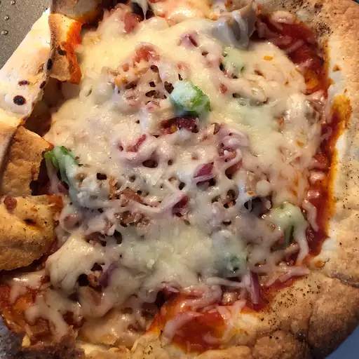

Easy Tortilla Pizza

Description
This tortilla pizza is extremely easy to make. It is light enough to be a snack,
serves well as an appetizer, or is so good that it can be devoured alone! You can
use any sort of topping variation. The one below is the classic way I usually
prepare it but feel free to experiment.
Ingredients
- 1 (8 inch) soft flour tortilla
- 1 teaspoon olive oil
- 1 pinch garlic powder
- salt and ground black pepper to taste
- 3 tablespoons tomato sauce
- 1 cooked chicken breast, sliced
- 1/2 green bell pepper, chopped
- 2 green onions, finely chopped
- 1/3 cup shredded mozarella cheese
- 1 pinch dried oregano
Steps
- Preheat oven to 400 degrees F (200 degrees C)
- Place tortilla on baking sheet. Brush with olive oil; sprinkle garlic powder, salt,
and pepper on top
- Bake in preheated oven until golden, 3 to 5 minutes. Remove from the oven
and spread tomato sauce on top; arrange chicken breast, green bell pepper, and
green onions over tomato sauce. sprinkle with mozarella cheese.
- Bake in preheated oven until cheese is melted, about 5 minutes. Sprinkle
oregano over cheese. Slice pizza into wedges using pizza cutter.